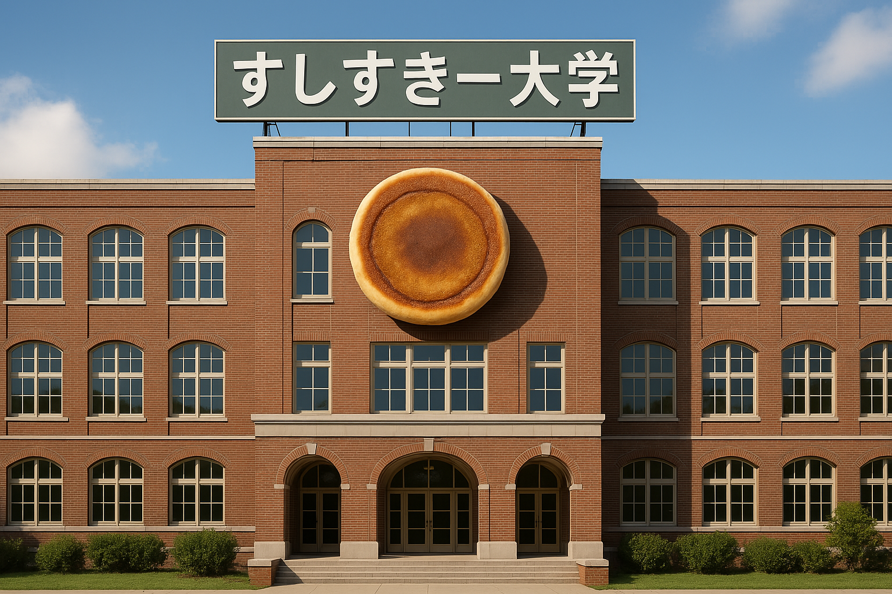

すしすきー大学が開校されました
2025年、ついにすしすきー大学がくちばし校長によって開校されました。
4月2日に行われた開校式では、くちばし校長からの演説(台本はChatGPTによる)や、関係者様へのお礼としてイズティ副校長によるベジマイト試食会が行われました。
これからすしすきー大学では、「見て、握って、食べる。」をモットーに、様々な生徒にすし握りやアンコリーノの教えを伝え、豊かな食を作り上げていきます。
このサイトは、ChatGPTを使用し、弊校所属の塩ポテト教授によって作っていただきました。